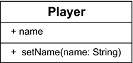

5 Eigene Klassen schreiben
»Das Gesetz ist der abstrakte Ausdruck des allgemeinen an und für sich seienden Willens.«
– Georg Wilhelm Friedrich Hegel (1770–1831)
In den letzten Kapiteln haben wir viel über Objektorientierung erfahren, aber eher von der Benutzerseite her. Wir haben gesehen, wie Objekte aufgebaut werden, und auch einfache Klassen mit statischen Methoden haben wir implementiert. Es wird Zeit, das Wissen um alle objektorientierten Konzepte zu vervollständigen.

5.1 Eigene Klassen mit Eigenschaften deklarieren
Die Deklaration einer Klasse leitet das Schlüsselwort class ein. Im Rumpf der Klasse lassen sich deklarieren:
- Attribute (Variablen)
- Methoden
- Konstruktoren
- Klassen- sowie Exemplarinitialisierer
- innere Klassen, innere Schnittstellen und innere Aufzählungen
Eine ganz einfache Klassendeklaration
Wir wollen die Konzepte der Klassen und Schnittstellen an einem kleinen Spiel verdeutlichen. Beginnen wir mit dem Spieler, den die Klasse Player repräsentiert:
Listing 5.1: com/tutego/insel/game/v1/Player.java, Player
class Player
{
}
Die Klasse hat einen vom Compiler generierten Konstruktor, sodass sich ein Exemplar unserer Klasse mit new Player() erzeugen lässt.
5.1.1 Attribute deklarieren
Diese Player-Klasse hat bisher keine Attribute und kann bisher nichts. Geben wir dem Spieler zwei Attribute: eines für den Namen und ein zweites für einen Gegenstand, den er trägt. Die Datentypen sollen beide String sein:
Listing 5.2: com/tutego/insel/game/v2/Player.java, Player
class Player
{
String name;
String item;
}
| Hinweis |
|
Eine spezielle Namenskonvention für Objektvariablen gibt es nicht. So ist es zwar möglich, zur Unterscheidung von lokalen Variablen ein Präfix wie »f« oder »_« voranzustellen, doch sogar die Eclipse-Macher sind davon abgekommen. Objektvariablen können auch grundsätzlich wie Methoden heißen, doch ist das unüblich, da Variablennamen im Allgemeinen Substantive und Methoden Verben sind. Da Bezeichner nie so heißen können wie Schlüsselwörter, fallen Variablen wie enum schon raus (das führte in Java 5 zu einigen Quellcodeänderungen, da dort enum als neues Schlüsselwort eingeführt wurde). |
Eine zweite Klasse Playground erzeugt in der statischen main()-Methode für den mutigen Spieler ein Player-Objekt, schreibt und liest die Attribute:
Listing 5.3: com/tutego/insel/game/v2/Playground.java, Playground
class Playground
{
public static void main( String[] args )
{
Player p = new Player();
p.name = "Mutiger Manfred";
p.item = "Schlips";
System.out.printf( "%s nimmt einen %s mit.", p.name, p.item );
}
}
Abbildung 5.1: Das UML-Diagramm zeigt Abhängigkeiten von Playground und Player
Initialisierung von Attributen
Anders als lokale Variablen initialisiert die Laufzeitumgebung alle Attribute mit einem Standardwert:
- 0 bei numerischen Werten und char
- false bei boolean
- null bei Referenzvariablen
Gefällt uns das nicht, lassen sich die Variablen mit einem Wert belegen:
class Player
{
String name = "";
}
Gültigkeitsbereich, Sichtbarkeit und Lebensdauer
Lokale Variablen beginnen ihr Leben in dem Moment, in dem sie deklariert und initialisiert werden. Endet der Block, ist die lokale Variable nicht mehr gültig, und sie kann nicht mehr verwendet werden, da sie aus dem Sichtbarkeitsbereich verschwunden ist. Bei Objektvariablen ist das anders. Eine Objektvariable lebt ab dem Moment, zu dem das Objekt mit new aufgebaut wurde, und sie lebt so lange, bis der Garbage-Collector das Objekt wegräumt. Sichtbar und gültig ist die Variable aber immer im gesamten Objekt und in allen Blöcken.[129](Das gilt nicht für statische Methoden und statische Initialisierungsblöcke, aber diese werden erst später vorgestellt.)

Spätestens, wenn zwei Klassen im Editor offen sind, möchten Tastaturjunkies schnell
zwischen den Editoren wechseln. Das geht in Eclipse mit  +
+  . Allerdings ist dieses Tastaturkürzel in der Windows-Welt unüblich, sodass es umdefiniert
werden kann, etwa zu + . Das geht so: Unter Windows • Preferences aktivieren wir unter General • Keys das Kommando Next Editor. Im Textfeld Binding lässt sich zunächst das alte Kürzel löschen und einfach + drücken. Das Ganze lässt sich auch für Previous Editor und +
. Allerdings ist dieses Tastaturkürzel in der Windows-Welt unüblich, sodass es umdefiniert
werden kann, etwa zu + . Das geht so: Unter Windows • Preferences aktivieren wir unter General • Keys das Kommando Next Editor. Im Textfeld Binding lässt sich zunächst das alte Kürzel löschen und einfach + drücken. Das Ganze lässt sich auch für Previous Editor und +  + wiederholen.
+ wiederholen.
Abbildung 5.2: Tastaturkürzel in Eclipse einstellen
5.1.2 Methoden deklarieren
Zu Attributen gesellen sich Methoden, die üblicherweise auf den Objektvariablen arbeiten. Anders als unsere bisherigen statischen Methoden werden diese aber für Player keine Klassenmethoden sein. Geben wir dem Spieler zwei Methoden: clearName() soll den Namen auf den Leerstring "" zurücksetzen, und hasCompoundName() soll verraten, ob der Spielername aus einem Vor- und Nachnamen zusammengesetzt ist. Der Name »Parry Hotter« ist zum Beispiel zusammengesetzt, »Spuckiman« aber nicht.
Listing 5.4: com/tutego/insel/game/v3/Player.java, Player
class Player
{
String name = "";
String item = "";
void clearName()
{
name = "";
}
boolean hasCompoundName()
{
return (name == null) ? false : name.contains( " " );
}
}
Abbildung 5.3: Das Klassendiagramm von Player zeigt zwei Attribute und zwei Methoden.
Testen wir die Methode mit zwei Spielern:
Listing 5.5: com/tutego/insel/game/v3/Playground.java, main()
Player parry = new Player();
parry.name = "Parry Hotter";
System.out.printf( "'%s' hat zusammengesetzten Namen: %b%n",
parry.name, parry.hasCompoundName() );
Player spucki = new Player();
spucki.name = "Spuckiman";
System.out.printf( "'%s' hat zusammengesetzten Namen: %b%n",
spucki.name, spucki.hasCompoundName() );
spucki.clearName();
System.out.printf( "Spuckis Name ist leer? %b%n", spucki.name.isEmpty() );
Wie zu erwarten, ist die Ausgabe:
'Parry Hotter' hat zusammengesetzten Namen: true
'Spuckiman' hat zusammengesetzten Namen: false
Spuckis Name ist leer? true
Abbildung 5.4: Ein Sequenzdiagramm stellt nur die Objekterzeugung und Methodenaufrufe, jedoch keine Attributzugriffe dar.
Um schnell von einer Methode (oder Variablen) zur anderen zu navigieren, zeigt + ein Outline an (dieselbe Ansicht wie in der Ansicht Outline). Im Unterschied zur Ansicht Outline lässt sich in diesem kleinen gelben Fenster mit den Cursor-Tasten navigieren, und
ein  befördert uns zur angewählten Methode oder dem angewählten Attribut. Wird in der
Ansicht erneut + gedrückt, befinden sich dort auch die in den Oberklassen deklarierten Eigenschaften.
Sie sind grau, und zusätzlich befinden sich hinter den Eigenschaften die Klassennamen.
befördert uns zur angewählten Methode oder dem angewählten Attribut. Wird in der
Ansicht erneut + gedrückt, befinden sich dort auch die in den Oberklassen deklarierten Eigenschaften.
Sie sind grau, und zusätzlich befinden sich hinter den Eigenschaften die Klassennamen.
Methodenaufrufe und Nebeneffekte
Alle Variablen und Methoden einer Klasse sind in der Klasse selbst sichtbar. Das heißt, innerhalb einer Klasse werden die Objektvariablen und Methoden mit ihrem Namen verwendet. Somit greift die Methode hasCompoundName() direkt auf das nötige Attribut name zu, um die Programmlogik auszuführen. Dies wird oft für Nebeneffekte (Seiteneffekte) genutzt. Die Methode clearName() ändert ausdrücklich eine Objektvariable und verändert so den Zustand des Objekts. hasCompoundName() liest dagegen nur den Zustand, modifiziert ihn aber nicht. Methoden, die Zustände ändern, sollten das in der API-Beschreibung entsprechend dokumentieren.
Objektorientierte und prozedurale Programmierung im Vergleich
Entwickler aus der prozeduralen Welt haben ein anderes Denkmodell verinnerlicht, sodass wir an dieser Stelle die Besonderheit der Objektorientierung noch einmal verdeutlichen wollen. Während in der guten objektorientierten Modellierung die Objekte immer gleichzeitig Zustand und Verhalten besitzen, gibt es in der prozeduralen Welt nur Speicherbereiche, die referenziert werden; Daten und Verhalten liegen hier nicht zusammen. Problematisch wird es, wenn die prozedurale Denkweise in Java-Programme abgebildet wird. Dazu ein Beispiel: Die Klasse PlayerData ist ein reiner Datencontainer für den Zustand, aber Verhalten wird hier nicht deklariert:
Listing 5.6: PlayerData.java
class PlayerData
{
String name = "";
String item = "";
}
Anstatt nun die Methoden ordentlich, wie in unserem ersten Beispiel, mit an die Klasse zu hängen, würde in der prozeduralen Welt ein Unterprogramm genau ein Datenobjekt bekommen und von diesem Zustände erfragen oder ändern:
Listing 5.7: PlayerFunctions.java
class PlayerFunctions
{
static void clearName( PlayerData data )
{
data.name = "";
}
static boolean hasCompoundName( PlayerData data )
{
return (data.name == null) ? false : data.name.contains( " " );
}
}
Da die Unterprogramme nun nicht mehr an Objekte gebunden sind, können sie statisch sein. Genauso falsch wären aber auch Methoden (egal ob statisch oder nicht) in der Klasse PlayerData, wenn sie ein PlayerData-Objekt übergeben bekommen.
Beim Aufruf ist dieser nicht-objektorientierte Ansatz gut zu sehen. Setzen wir links den falschen und rechts den korrekt objektorientiert modellierten Weg ein:
| Prozedural | Objektorientiert |
|
PlayerData parry = new PlayerData(); |
Player parry = new Player(); |
Ein Indiz für problematische objektorientierte Modellierung ist also, wenn externen Methoden Objekte übergeben werden, anstatt die Methoden selbst an die Objekte zu setzen.
5.1.3 Die this-Referenz
In jeder Objektmethode und jedem Konstruktor steht eine Referenz mit dem Namen this bereit, die auf das eigene Exemplar zeigt. Mit dieser this-Referenz lassen sich elegante Lösungen realisieren, wie die folgenden Beispiele zeigen:
- Die this-Referenz löst das Problem, wenn Parameter beziehungsweise lokale Variablen Objektvariablen verdecken.
- Liefert eine Methode als Rückgabe die this-Referenz auf das aktuelle Objekt, lassen sich Methoden der Klasse einfach hintereinandersetzen.
- Mit der this-Referenz lässt sich einer anderen Methode eine Referenz auf uns selbst geben.
Überdeckte Objektvariablen nutzen
Trägt eine lokale Variable den gleichen Namen wie eine Objektvariable, so verdeckt sie diese. Das folgende Beispiel deklariert in der Player-Klasse eine Objektvariable name, und eine Methode quote() deklariert in der Parameterliste eine Variable, die ebenfalls name heißt. Somit bezieht sich in der Methode jeder Zugriff auf name auf die Parametervariable und nicht auf die Objektvariable:
class Player
{
String name; // Objektvariable name
void quote( String name ) // Lokale Parametervariable name
{
System.out.println( "'" + name + "'" ); // Bezieht sich auf Parametervariable
}
}
Das heißt aber nicht, dass auf die äußere Variable nicht mehr zugegriffen werden kann. Die this-Referenz zeigt auf das aktuelle Objekt, und damit ist auch ein Zugriff auf Objekteigenschaften jederzeit möglich:
class Player
{
String name;
void quote( String name )
{
System.out.println( "'" + this.name + "'" ); // Zugriff auf Objektvariable
System.out.println( "'" + name + "'" ); // Zugriff auf Parametervariable
}
}
Häufiger Einsatzort für das this in Methoden sind Methoden, die Zustände initialisieren. Gerne nennen Entwickler die Parametervariablen so wie die Exemplarvariablen, um damit eine starke Zugehörigkeit auszudrücken. Schreiben wir eine Methode setName():
class Player
{
String name;
void setName( String name )
{
this.name = name;
}
}
Der an setName() übergebene Wert soll die Objektvariable name initialisieren. So greift this.name auf die Objektvariable direkt zu, sodass die Zuweisung this.name = name; die Objektvariable mit dem Argument initialisiert.
Abbildung 5.5: Klassendiagramm für Player mit Setter
this für kaskadierte Methoden *
Die append()-Methoden bei StringBuilder liefern die this-Referenz, sodass sich Folgendes schreiben lässt:
StringBuilder sb = new StringBuilder();
sb.append( "Android oder iPhone" ).append( '?' );
Jedes append() liefert das StringBuilder-Objekt, auf dem es aufgerufen wird. Wir wollen diese Möglichkeit bei einem Spieler programmieren, sodass die Methoden name() und item() Spielername und Gegenstand zuweisen. Beide Methoden liefern ihr eigenes Player-Objekt über die this-Referenz zurück:
Listing 5.8: com/tutego/insel/game/v4/Player.java, Player
class Player
{
String name = "", item = "";
Player name( String name )
{
this.name = name;
return this;
}
String name()
{
return name;
}
Player item( String item )
{
this.item = item;
return this;
}
String item()
{
return item;
}
String id()
{
return name + " hat " + item;
}
}
Abbildung 5.6: Player-Klasse mit kaskadierbaren Methoden
Erzeugen wir einen Player, und kaskadieren wir einige Methoden:
Listing 5.9: com/tutego/insel/game/v4/Playground.java, main()
Player parry = new Player().name( "Parry" ).item( "Helm" );
System.out.println( parry.name() ); // Parry
System.out.println( parry.id() ); // Parry hat Helm
Der Ausdruck new Player() liefert eine Referenz, die wir sofort für den Methodenaufruf nutzen. Da name(String) wiederum eine Objektreferenz vom Typ Player liefert, ist dahinter direkt .item(String) möglich. Die Verschachtelung von name(String).item(String) bewirkt, dass Name und Gegenstand gesetzt werden und der jeweils nächste Methodenaufruf in der Kette über this eine Referenz auf dasselbe Objekt, aber mit verändertem internen Zustand bekommt.
| Hinweis |
|
Bei Anfragemethoden könnten wir versucht sein, diese praktische Eigenschaft überall zu verwenden. Üblicherweise sollten Objekte jedoch ihre Eigenschaften nach der JavaBeans-Konvention mit void setXXX() setzen, und dann liefern sie ausdrücklich keine Rückgabe. Eine mit dem Objekttyp deklarierte Rückgabe Player setName(String) verstößt also gegen diese Konvention, sodass die Methode in dem Beispiel einfach Player name(String) heißt. Beispiele dieser Bauart sind in der Java-Bibliothek an einigen Stellen zu finden. Sie werden auch Builder genannt. |
Ihr Kommentar
Wie hat Ihnen das <openbook> gefallen? Wir freuen uns immer über Ihre freundlichen und kritischen Rückmeldungen.
 Jetzt bestellen
Jetzt bestellen


{kind=link}
{kind=link}
{kind=link}
{kind=link}
{kind=link}
{kind=link}